Update 2.0 „Der Schwarze Kristall“ erscheint im Dezember. Im Play Store ist gerade Version 1.8.1 – Akt II, Weltboss und Splitterpass kommen mit dem Update.
Update 2.0 “The Black Crystal” arrives in December. Google Play currently has version 1.8.1 – Act II, the World Boss and the Shard Pass come with the update.
2.0 güncellemesi “Kara Kristal” Aralık’ta geliyor. Play Store’da şu an 1.8.1 sürümü var – II. Perde, Dünya Boss’u ve Kristal Bileti güncellemeyle gelecek.
SHARDFALL
Ein Daumen, zwei Akte und jede Menge Beute: Kämpf dich als Kael mit deiner Lichtbegleiterin Lyra durch 90 Level, sammle Ausrüstung, werde stärker und stell dich dem Schwarzen Kristall.
One thumb, two acts and loads of loot: fight your way through 90 stages as Kael with your light companion Lyra, collect gear, grow stronger and face the Black Crystal.
Tek başparmak, iki perde ve bolca ganimet: Işık yol arkadaşın Lyra ile Kael olarak 90 aşamada savaş, ekipman topla, güçlen ve Kara Kristal’in karşısına çık.
- KostenlosFree to playÜcretsiz
- Deutsch · English · Türkçe
- Google Play Games


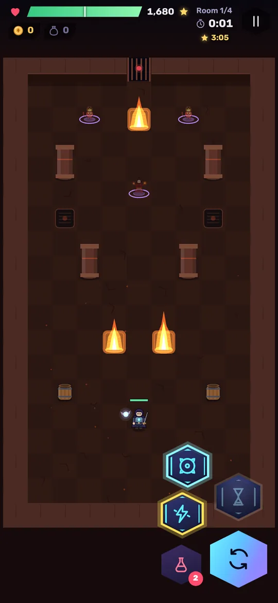


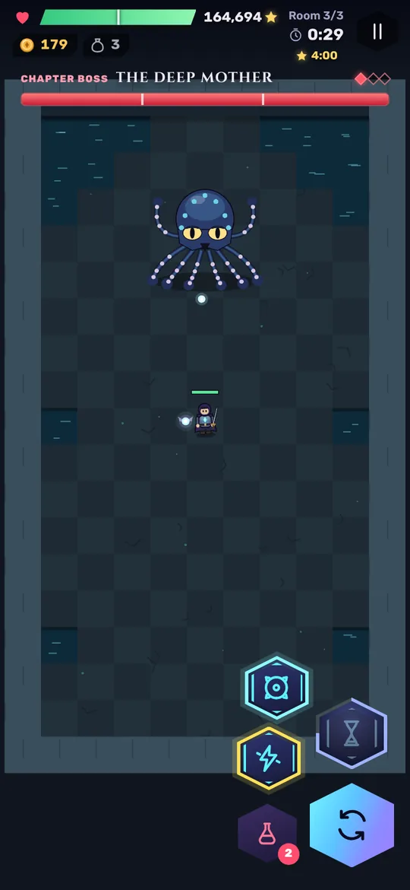

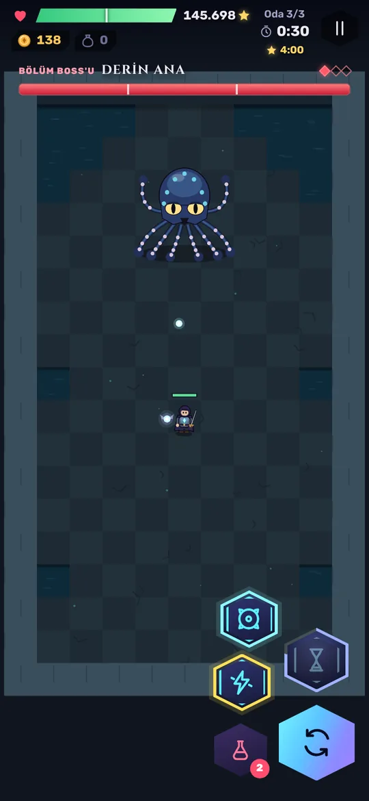

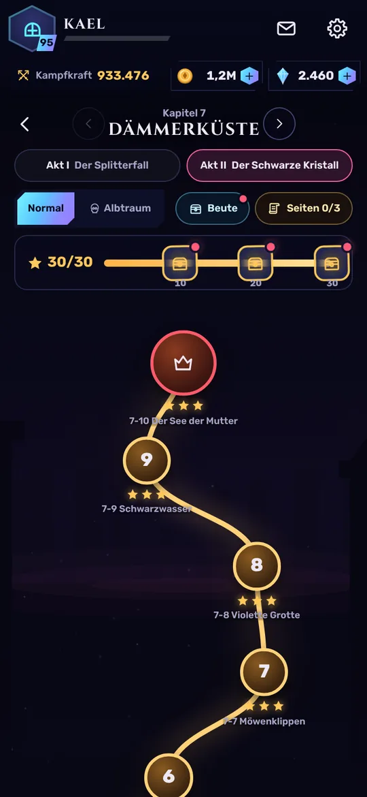

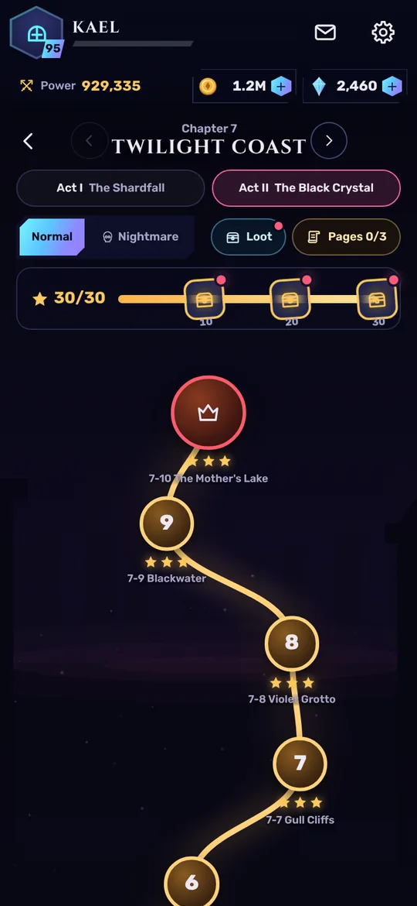

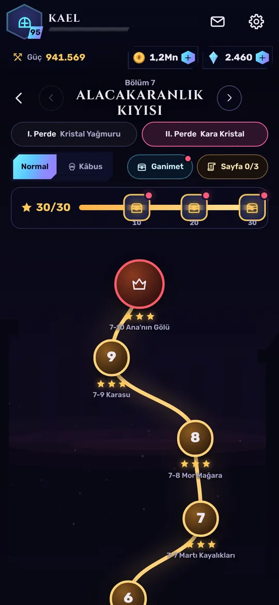

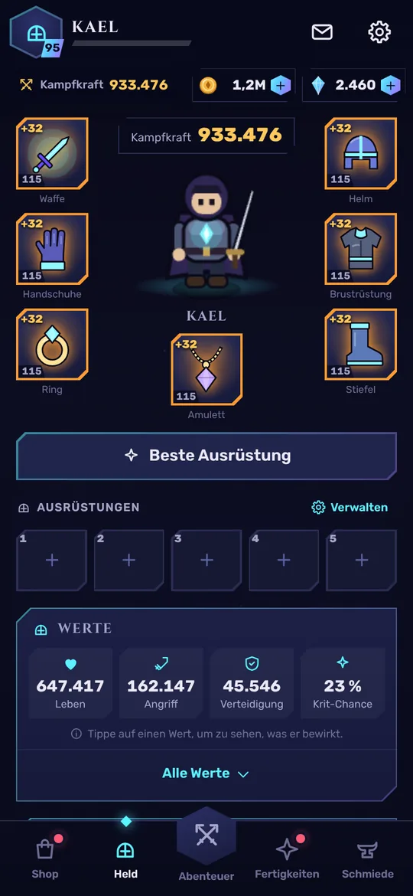

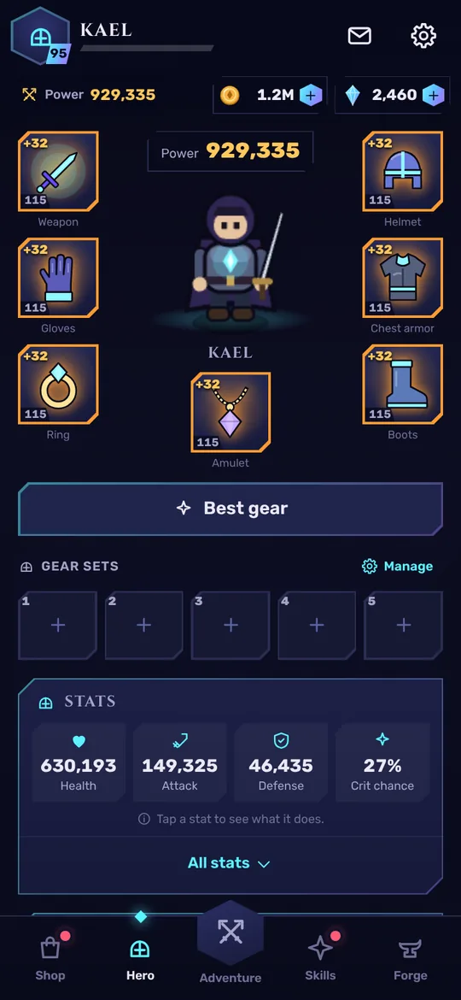

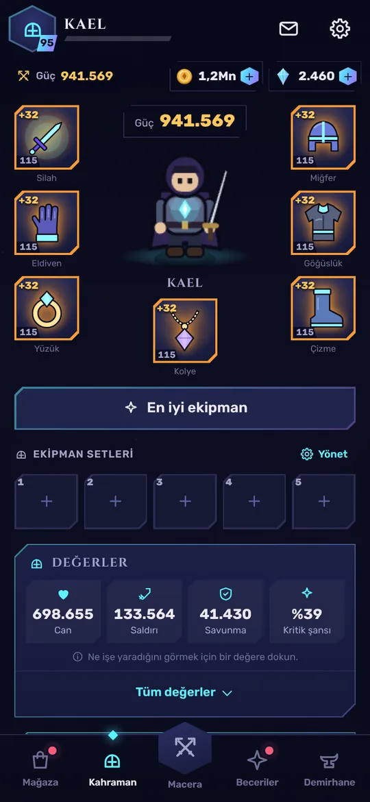

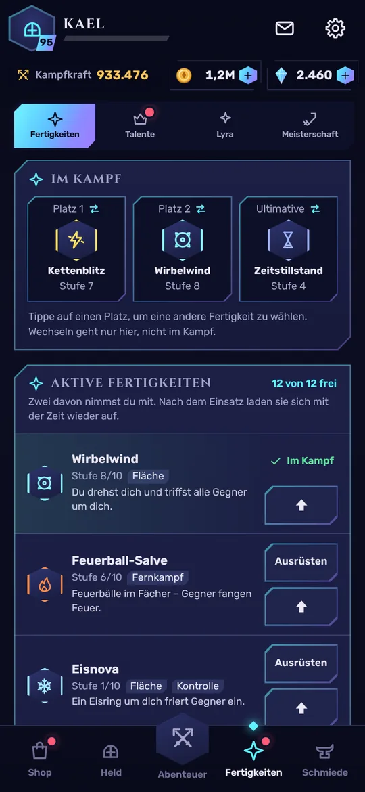

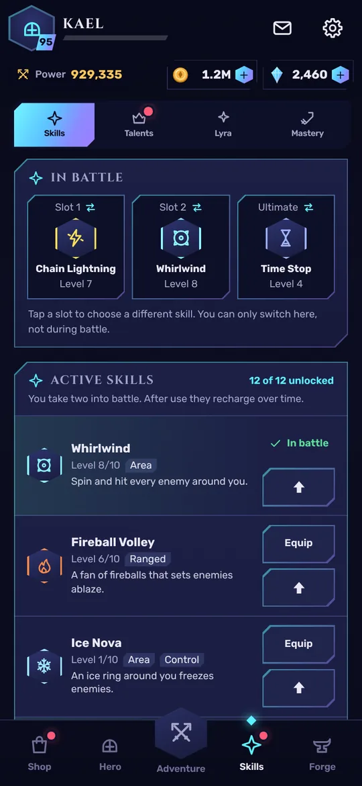

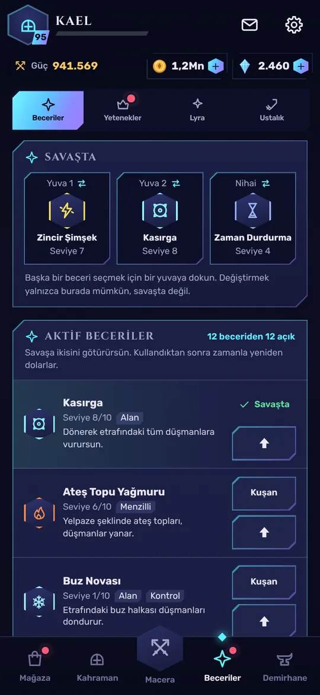
Wischen für mehr Bilder · Antippen zum Vergrößern
Swipe for more · tap to enlarge
Daha fazlası için kaydır · büyütmek için dokun
Die GeschichteThe storyHikâye
Vor einem Jahr zerbrach der Himmelskristall, der ganz Aethra mit Licht versorgte. Seine Splitter regneten herab – der Splitterfall – und machten Tiere und Menschen zu Monstern. Du erwachst als Kael mit einem Splitter in der Brust, an deiner Seite Lyra: ein Splitter, der denken kann. Story-Szenen erzählen die Geschichte, der Codex sammelt alles über Gegner, Seiten und Sets.
A year ago the Sky Crystal that gave all of Aethra its light shattered. Its shards rained down – the Shardfall – and turned beasts and people into monsters. You wake up as Kael with a shard in your chest and Lyra at your side: a shard that can think. Story scenes tell the tale, and the codex collects everything about enemies, pages and sets.
Bir yıl önce tüm Aethra’ya ışık veren Gök Kristali paramparça oldu. Parçaları yağmur gibi yağdı – Kristal Yağmuru – ve hayvanlarla insanları canavara dönüştürdü. Kael olarak göğsünde bir kristal parçasıyla uyanırsın; yanında düşünebilen bir parça olan Lyra var. Hikâye sahneleri olanları anlatır, kodeks de düşmanlar, sayfalar ve setler hakkında her şeyi toplar.
Der SplitterfallThe ShardfallKristal Yağmuru
- Aschewald
- Versunkene Katakomben
- Gläserne Wüste
- Frostgipfel
- Glutschmiede
- Himmelszitadelle
- Ashwood
- Sunken Catacombs
- Glass Desert
- Frost Peaks
- Ember Forge
- Sky Citadel
- Kül Ormanı
- Batık Katakomblar
- Cam Çölü
- Ayaz Zirveleri
- Kor Demirhanesi
- Gök Hisarı
Der Schwarze KristallThe Black CrystalKara Kristal
- Dämmerküste
- Obsidianstadt Vhal
- Das Nachtherz
- Twilight Coast
- Obsidian City of Vhal
- The Night Heart
- Alacakaranlık Kıyısı
- Obsidyen Şehri Vhal
- Gece Kalbi
Was dich erwartetWhat awaits youSeni neler bekliyor
Beute und AusrüstungLoot and gearGanimet ve ekipman
Sieben Waffenklassen vom Schwert bis zum Zauberstab, sieben Ausrüstungsplätze, sechs Seltenheiten bis Mythisch, Elemente und Sets. In der Schmiede stellst du her, wertest auf und erweckst mythische Waffen.
Seven weapon classes from sword to staff, seven gear slots, six rarities up to Mythic, elements and sets. In the forge you craft, upgrade and awaken mythic weapons.
Kılıçtan asaya yedi silah sınıfı, yedi ekipman yuvası, Mitik’e kadar altı nadirlik, elementler ve setler. Demirhanede üretir, geliştirir ve mitik silahları uyandırırsın.
Fertigkeiten und TalenteSkills and talentsBeceriler ve yetenekler
16 Fertigkeiten – zwei aktive und eine Ultimative nimmst du mit in den Kampf. Drei Talentzweige (Krieger, Wächter, Mystiker), Heldenstufe bis 100 und Lyra bis Stufe 40.
16 skills – you take two actives and one ultimate into battle. Three talent branches (Warrior, Guardian, Mystic), hero level up to 100 and Lyra up to level 40.
16 beceri – savaşa iki aktif ve bir nihai beceri götürürsün. Üç yetenek dalı (Savaşçı, Muhafız, Mistik), 100. seviyeye kadar kahraman ve 40. seviyeye kadar Lyra.
EndgameEndgameOyun sonu
Albtraum-Modus für alle neun Kapitel, Turm der Splitter mit Belohnungen bis Etage 120, Tages-Dungeons in 30 Stufen und der Weltboss „Tiefe Mutter“.
Nightmare mode for all nine chapters, the Tower of Shards with rewards up to floor 120, daily dungeons in 30 tiers and the World Boss “The Deep Mother”.
Dokuz bölümün hepsi için Kâbus modu, 120. kata kadar ödüllü Kristal Kulesi, 30 seviyeli günlük zindanlar ve Dünya Boss’u “Derin Ana”.
SplitterpassShard PassKristal Bileti
Saisons mit 40 Stufen. Pass-EP gibt es fürs normale Spielen, die Gratis-Leiste ist für alle da, Werbung ist nie nötig.
Seasons with 40 levels. You earn Pass XP by simply playing, the free track is for everyone and ads are never required.
40 seviyeli sezonlar. Bilet puanını normal oynayarak kazanırsın, ücretsiz yol herkes için açık, reklam asla gerekmez.
Google Play GamesGoogle Play GamesGoogle Play Games
Spielstand in der Cloud, 119 Erfolge und Bestenlisten für den Turm und den Weltboss.
Cloud saves, 119 achievements and leaderboards for the tower and the World Boss.
Bulutta kayıt, 119 başarım ve kule ile Dünya Boss’u için sıralamalar.
Mit einem DaumenOne thumbTek başparmak
Laufen, ausweichen und Fertigkeiten einsetzen – alles mit einem Daumen. Auf Wunsch gibt es Auto-Fertigkeiten und Auto-Kampf.
Move, dodge and use skills – all with one thumb. Auto skills and auto battle are there if you want them.
Yürü, kaç ve becerilerini kullan – hepsi tek başparmakla. İstersen otomatik beceri ve otomatik savaş da var.
Häufige FragenFAQSık sorulan sorular
Kostet Shardfall etwas?Does Shardfall cost anything?Shardfall ücretli mi?
Nein. Shardfall ist kostenlos und finanziert sich über Werbung. Im Shop gibt es freiwillige Käufe, zum Beispiel Kristalle, ein Paket ohne Zwischenwerbung und die Premium-Leiste des Splitterpasses.
No. Shardfall is free to play and funded by ads. The shop offers optional purchases, for example crystals, a pack that removes interstitial ads and the premium track of the Shard Pass.
Hayır. Shardfall ücretsizdir ve reklamlarla finanse edilir. Mağazada isteğe bağlı satın almalar vardır; örneğin kristaller, ara reklamları kaldıran bir paket ve Kristal Bileti’nin premium yolu.
Brauche ich ein Konto?Do I need an account?Hesap gerekiyor mu?
Nein. Mit Google Play Games kannst du freiwillig deinen Spielstand in der Cloud sichern und Erfolge sammeln.
No. With Google Play Games you can optionally back up your save in the cloud and collect achievements.
Hayır. İstersen Google Play Games ile kaydını buluta yedekleyebilir ve başarım toplayabilirsin.
Bleibt mein Spielstand bei Updates erhalten?Is my progress kept when the game updates?Güncellemelerde ilerlemem korunuyor mu?
Ja. Spielst du auf mehreren Geräten, aktualisiere alle: Ältere Versionen können einen neueren Spielstand nicht aus der Cloud laden.
Yes. If you play on several devices, update all of them: older versions cannot load a newer save from the cloud.
Evet. Birden fazla cihazda oynuyorsan hepsini güncelle: eski sürümler daha yeni bir kaydı buluttan yükleyemez.
In welchen Sprachen gibt es das Spiel?Which languages are supported?Oyun hangi dillerde?
Deutsch, Englisch und Türkisch. Das Spiel startet in der Sprache deines Geräts; umstellen kannst du sie in den Einstellungen.
German, English and Turkish. The game starts in your device language; you can change it in the settings.
Almanca, İngilizce ve Türkçe. Oyun cihazının dilinde başlar; dili ayarlardan değiştirebilirsin.
Ich habe einen Fehler gefunden. Wohin damit?I found a bug. Where do I report it?Bir hata buldum. Nereye bildireyim?
Schreib uns an pixelactiondev@gmail.com – am besten mit Gerät, Android-Version und dem, was du gerade gemacht hast.
Email us at pixelactiondev@gmail.com – ideally with your device, Android version and what you were doing.
Bize pixelactiondev@gmail.com adresinden yaz – mümkünse cihazını, Android sürümünü ve o sırada ne yaptığını ekle.